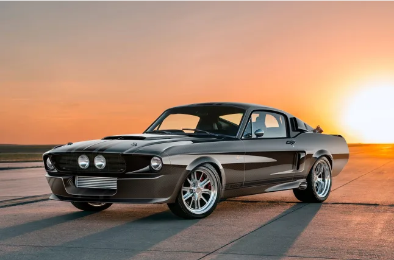

Mustang Shelby GT500

Veja mais
Com a evolução de tecnologias industriais, veículos antigos vêm recebendo remakes aperfeiçoados; mantendo estética mas melhorando desempenho. Um desses é o Mustang Shelby GT500 CR 1967, que ganhou nov... Leia mais em: https://quatrorodas.abril.com.br/noticias/mustang-shelby-gt500-cr-carroceria-fibra-de-carbono-v8-810-cv/
Veja mais